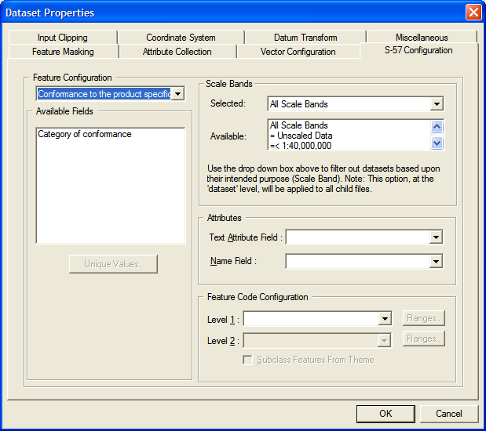

S-57 Configuration Panel
The S-57 Configuration Panel allows the user to access the attribute data that is contained within the source S-57 data files and to use it to enhance the rendering and the presentation of the data.
Attribute data can be used in the following ways:
- To subclass features from existing S-57 features. Two levels of subclassing are currently provided. These may incorporate class breaks if required.
- To create separate feature classes for each unique value of selected attributes of an existing S-57 feature.
- To create text primitives from the selected attribute.
- To attach a name to each primitive using the selected attribute.
The Feature Configuration panel provides a drop-down list of all relevant features. If feature configuration has been invoked for a single data file, this list shows all features that are present in the file. If feature configuration has been invoked for a dataset, the list shows all features that are present in any of the files within the dataset.
For each feature shown in the Feature Configuration list, the Available Fields list shows the attributes that can be used. This list is provided for information purposes only; to use an attribute for a given purpose, you should select it from the appropriate list in the Feature Configuration panel or the Attribute panel.
MapLink Pro supports two specific types of S57 Data Product Specification. ENC (Electronic Nautical Chart) and AML (Additional Military Layers). This configuration is based at the dataset level (it applies to all data within the dataset) and is chosen when the dataset is created.

 To open the S-57 Configuration Panel
To open the S-57 Configuration Panel
- With an S-57 data file selected, use Data | Format Configuration…
- With an S-57 Dataset selected, use Dataset | Format Configuration…
To create new features as subclasses of existing S-57 features
- In the Feature Code Configuration panel, select the attribute from the Level 1 list that is to provide the first level of subclassing.
- Tick the Subclass Features from Theme check box
- If a second level of subclassing is required, select the attribute that is to provide it from the Level 2 list
- Press OK
- The data or Dataset affected will be re-catalogued to obtain the new set of feature codes according to the new settings. A separate feature subclass will be created for each unique value of the attribute that is found in the data.
To apply class breaks to a feature subclass
- In the Feature Code Configuration panel, press Ranges by the appropriate feature subclass level
- Enter the number of break points required
- Choose whether you require MapLink Pro to define the break points by distribution or by range (for numeric data only). Alternatively, the break points may be defined individually
- Press Update to show the updated break point details
- Press Analyse to show the result of the unique value analysis carried out on the data
- Press Accept to apply the changes
To create separate new features from existing S-57 features
- In the Feature Code Configuration panel, select the attribute from the Level 1 list that is to be used to generate new feature codes.
- Ensure that the Subclass Features from Theme check box is not ticked.
- If the new feature codes are to be generated for each unique combination of two attributes, select the second attribute from the level 2 list.
- Press OK.
- The data or Dataset affected will be re-catalogued to obtain the new set of feature codes according to the new settings. A separate feature class will be created for each unique value of the attribute that is found in the data (or for each unique combination of attributes, if two attributes are selected).
In order to ensure that the feature classes are uniquely identified, the generated MapLink Pro Feature Code will be of the form:
<feature code>:<attribute name>_<attribute value>[:<attribute name>_<attribute value>]
Similarly, the generated feature label will be of the form:
<feature label>:<attribute name>_<attribute value>[:<attribute name>_<attribute value>]
To change the generated feature label, rename the feature within the appropriate Feature Book section. Feature codes themselves cannot be changed.
To attach a name to each primitive from attribute data
- In the Attributes panel, select the entry from the Name Field list that is to be used to provide the name for the primitive
- Press OK
- The Data or Dataset affected will not be re-catalogued, as no new primitives or feature codes will be created
To create text primitives from attribute data
- In the Attributes panel, select the entry from the Text Attribute Field list that is to provide the displayable text primitives
- Press OK
- The Data or Dataset affected will be re-catalogued to obtain the new primitive counts according to the new settings.
To filter the S-57 data to only import a particular Scale Band
Each S57 Product Specification defines a list of scale bands that may be applied to an S57 dataset. The Scale Bands section on this page lists the available scale bands and allows the user to select one. If a scale band is selected then, on reloading, the dataset is filtered according to the chosen scale. Note that scale bands are used to describe the complete S57 dataset so this mechanism is most useful when the file loaded by the filter is an S57 catalogue file (that specifies several S57 datasets). It can also be set at the MapLink Pro Studio dataset level in which case in will apply scale band filtering to all of the S57 data files within this dataset
- In the Scale Bands panel, select the entry from the Selected list of available Scale Bands.
- The default is “All Scale Bands”.
To collect attributes of features from the data for runtime queries
It is possible to import attribute data, for example the name of roads, into the map data. This can then be queried by runtime applications, for example to display information in a pop-up or tool-tip window when the curser is hovered or clicked over the map.
Links: